Bevor Sie Ihre Anlagen anlegen, sollten Sie im Menüpunkt
1 WinLine Start
1 Parameter
1 Applikations-Parameter
1 ANBU-Parameter
die notwendigen Informationen hinterlegen.
Die Anlagen werden im Menüpunkt
1 Stammdaten
1 Anlagenstamm
angelegt.
Dieser Programmpunkt kann auch mit der Tastenkombination
1 STRG + S
aufgerufen werden.
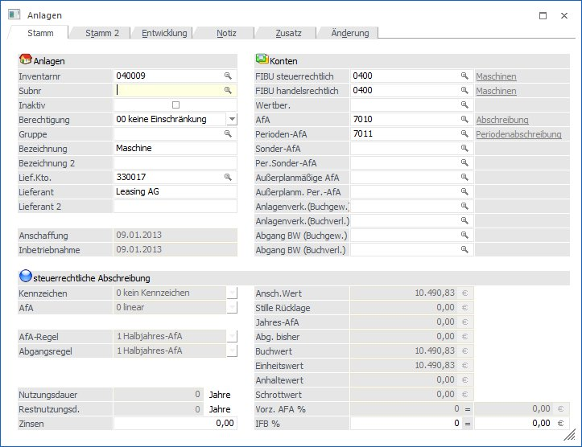
Buttons
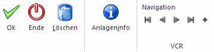
Ø OK
Die eingetragene Anlage wird gespeichert.
Ø Ende
Das Fenster wird geschlossen, die eingetragene Anlage wird nicht gespeichert.
Ø Löschen
Die Anlage wird gelöscht, sofern sie im aktuellen WJ angeschafft und in Betrieb genommen wurde und noch keine Jahres-Abschreibung stattgefunden hat.
Ø Anlageninfo
Mit Hilfe des Anlageninfo-Buttons erhalten Sie eine Kurzübersicht zur angewählten Anlage.
Ø Navigationsleiste (VCR)
Mit Hilfe der VCR-Controls kann zwischen bestehenden Anlagen geblättert werden, bzw. mit dem "+" die nächste freie Anlagennummer gefunden werden. Diese VCR-Controls gibt es übrigens in so gut wie allen Stammdatenfenstern, wodurch ein sehr effizientes Warten der Stammdaten ermöglicht wird.
Der Anlagenstamm beinhaltet alle Informationen, die das Anlagegut speziell betreffen, z.B. die steuerrechtliche Grundnutzungsdauer, das FIBU-Konto für die AfA-Buchung, das Anschaffungs- und Inbetriebnahmedatum, etc.
Zusätzlich werden im Anlagenstamm auch der Einheits- und Restbuchwert berechnet. Für die Übergabe der WinLine ANBU in die Kostenrechnung werden im Anlagenstamm auch die Kostenstelle, Kostenart und die kalk. GND erfasst.
Ø Archiveintrag
Im Anlagestamm kann eine Datei/Dokument per Drag&Drop auf das Fenster gezogen werden. Dabei wird das Fenster "neuer Archiveintrag" geöffnet und als Schlagwörter werden (zusätzlich zu den voreingestellten Schlagwörtern) die Inventarnummer und die Lieferantennummer inkl. Bezeichnung übergeben.
Anlagen
Ø Inventarnr.
20stellig, alphanumerisch
Hier wird die Inventarnummer des Anlagengutes eingetragen; mit der Matchcode-Suchfunktion können Sie die gewünschte Inventarnummer suchen.
Ist eine Inventarnummer bereits vorhanden, können die bestehenden Werte in den Eingabefeldern geändert werden (siehe Kapitel Anlagenänderung).
Hinweis
Soll ein neues Anlagegut erfasst werden, das aber eigentlich Bestandteil eines bereits bestehenden Gutes ist, kann das neue Inventargut als Subnummer angelegt werden. Dadurch bleibt der Zusammenhang mit dem Hauptanlagegut gewahrt.
Wird also eine bereits bestehende Inventarnummer eingegeben, kann im Eingabefeld "Subanlage" eine fortlaufende Subnummer vergeben werden.
Wird ein Inventargut neu angelegt, so wird dies automatisch in - noch nicht abgeschriebenen - Folgejahren ebenfalls angelegt.
Ø Subnummer
Wird für Anlagegüter vergeben, bei denen es sich um eine Untergruppe handelt (z.B. PC/Laufwerk /Grafikkarte, etc.). Die Nutzungsdauer bzw. Restnutzungsdauer bei Subanlagegütern wird vom Hauptanlagegut übernommen.
Hinweis
Anlagegüter, die als Hauptanlagegüter gelten, dürfen nicht mit Einträgen im Feld Subnr. (z.B. 000) angelegt werden. Es stehen Ihnen sonst nicht die Eingabefelder für die Nutzungsdauer zur Verfügung. Zum Zeitpunkt der Erstanlage eines Subanlagegutes wird aufgrund der im Hauptanlagegut eingetragenen Nutzungsdauer die Restnutzungsdauer für die Subanlage geprüft. Änderungen zu einem späteren Zeitpunkt können individuell pro Anlage (Haupt- oder Subanlage) durchgeführt werden.
Ø Inaktiv
Wenn ein Datensatz auf Inaktiv gesetzt wird, hat das vorerst nur die Auswirkung, dass er nicht mehr im Matchcode angezeigt wird. Durch einen Reorg kann dieser Datensatz aus der Datenbank entfernt werden. Voraussetzung dafür ist, dass für den Datensatz keine Bewegungsdaten (Buchungen etc.) vorhanden sind. Nähere Informationen zum Reorganisieren entnehmen Sie bitte dem WinLine START-Handbuch.
Ø Berechtigung
Für jedes Anlagegut kann ein Berechtigungsprofil vergeben werden. Wenn der Anwender ein Anlagegut aufruft, wird geprüft, ob der Anwender einer Benutzergruppe zugeordnet wurde, welche in dem jeweiligen Profil enthalten ist und ob somit eine Bearbeitung erlaubt wäre (nähere Informationen entnehmen Sie bitte dem WinLine ADMIN - Handbuch).
Hinweis
Benutzern des Typs "Administrator" oder mit der Administratorenberechtigung "Benutzeradministrator" steht in der Auswahlbox der Punkt ">> Neues Profil" zur Verfügung. Über die Anwahl dieses Eintrags kann in der Folge ein neues Berechtigungsprofil angelegt werden.
Ø Gruppe
Eingabe der Anlagengruppe, die Sie vorher in dem Programm Anlagengruppe angelegt haben. Zur Erleichterung gibt es wieder die Matchcode-Suchfunktion. Den Matchcode rufen Sie auf, indem Sie entweder:
ü mit der Maus die Lupe hinter dem Eingabefeld anklicken oder
ü den Matchcode über die Tastatur mit F9 aufrufen.
Ø Bezeichnung
2 Zeilen, max. je 40 Zeichen, alphanumerisch
Eingabe der Bezeichnung des Anlagegutes. Bei einer Neuanlage eines Anlageguts (oder einer SUB-Anlage) wird hier der Text " NEUEINGABE - F9 für Übernahme" vorgeschlagen - damit können über die Matchcodefunktion (F9-Taste) Werte von einem bestehenden Anlagegut übernommen werden (Es werden nur Stammdaten übernommen; bereits erfasste Buchungen werden nicht berücksichtigt).
Die Übernahme der Zusatzfelder wird über die Einstellung der Checkbox "Anlagen mit Zusatzfeldern kopieren" im Anlagenparameter gesteuert.
Ø Lief.Kto.
max. 20stellig, alphanumerisch
Eingabe des Lieferantenkontos, nach der Nummer oder dem Namen kann auch mit der Matchcode-Funktion gesucht werden.
Ø Lieferant
Bezeichnung des Lieferantenkontos, wird automatisch angedruckt (Kontobezeichnung aus FIBU), 2 Zeilen zu je max. 40 Zeichen, alphanumerisch.
Ø Anschaffung
Eingabe des Anschaffungsdatums (für Berechnung des IFB).
Achtung
Anlagegüter müssen immer in dem Wirtschaftsjahr der Anschaffung erfasst werden.
Ø Inbetriebnahme
Eingabe des Datums der Inbetriebnahme, welches vor allem für die Halbjahresregelung in der Berechnung der AfA relevant ist. Z.B. Anschaffung eines Anlagegutes am 5.6.2013 und sofortige Inbetriebnahme = Abschreibung für ein ganzes Jahr. Anschaffung eines Anlagegutes am 5.6.2013, die Inbetriebnahme erfolgt jedoch erst am 10.8.2013 = Abschreibung für ein halbes Jahr (natürlich abhängig von den Einstellungen in den Abschreibungs-Parametern; hier ist ja auch eine monatsgenaue Errechnung wie z.B. in Deutschland üblich, aber es sind auch noch andere Varianten der AfA-Berechnung denkbar - siehe "AfA-Regel" und "Abgangsregel"). Bei einer "Anlage in Bau" kann das Inbetriebnahmedatum leer gelassen werden.
Achtung
Für nachträgliche Anschaffungs- und Herstellungskosten kann das Inbetriebnahmedatum einer Subanlage vor dem Anschaffungsdatum liegen, sofern die Hauptanlage auch im aktuellen Jahr angeschafft wurde.
Hinweis 1
Solange kein Inbetriebnahmedatum eingetragen wird, können die Stammdaten einer Anlage im Stamm editiert werden - auch wenn für das Wirtschaftsjahr bereits die Jahresabschreibung durchgeführt wurde.
Wenn kein Inbetriebnahmedatum eingetragen ist, wird auch keine Abschreibung für dieses Anlagegut gerechnet.
Hinweis 2
In deutschen Mandanten wird das Inbetriebnahmedatum bei der Erfassung neuer Subanlagen mit dem Wirtschaftsjahresbeginn vorgeschlagen, wenn die Subanlage nicht im Anschaffungsjahr sondern in einem Folgejahr angeschafft wird.
Konten
Ø FIBU steuerrechtlich
max. 20-stellig, alphanumerisch
Eingabe des FIBU-Kontos, auf welchem die Anlage verbucht wurde. Dadurch wird der Zusammenhang zwischen ANBU und FIBU hergestellt.
Ist im Anlagenparameter die steuerrechtliche Buchungsübergabe hinterlegt, wird das steuerrechtliche FIBU-Konto für die Buchungsübergabe in die FIBU bei der Perioden-/Jahresabschreibung und beim Anlagenverkauf herangezogen.
Auch bei diversen Auswertungen wird dieses Konto herangezogen, wenn die Auswertung nach FIBU-Konto mit den steuerrechtlichen Werten ausgegeben wird.
Ø FIBU handelsrechtlich
max. 20-stellig, alphanumerisch
Eingabe des FIBU-Kontos, auf welchem die Anlage verbucht wurde. Dadurch wird der Zusammenhang zwischen ANBU und FIBU hergestellt.
Ist im Anlagenparameter die handelsrechtliche Buchungsübergabe hinterlegt, wird das handelsrechtliche FIBU-Konto für die Buchungsübergabe in die FIBU bei der Perioden-/Jahresabschreibung und beim Anlagenverkauf herangezogen.
Auch bei diversen Auswertungen wird dieses Konto herangezogen, wenn die Auswertung nach FIBU-Konto mit den handelsrechtlichen Werten ausgegeben wird.
Ø Wertberichtigungskonto
Wurde in den Anlagenparametern aktiviert, dass die (Perioden-)Abschreibung auf ein Wertberichtigungskonto verbucht werden soll, ist hier dieses einzugeben.
Hinweis
Genauere Erklärungen zum Thema direkte und indirekte Abschreibung finden Sie in der Hilfe zum Menü "Anlagenparameter"
Ø AfA-Konto
max. 20stellig, alphanumerisch
Eingabe des AfA-Kontos, welches die Verbindung zwischen WinLine FIBU und WinLine ANBU darstellt. D.h. die Jahres-AfA-Buchung kann per Knopfdruck (Buchungsübergabe) direkt in die FIBU übergeben werden. Der Buchungsübergabestapel in der FIBU hat die Stapelnummer -20.
Ø Perioden-AfA-Konto
max. 20stellig, alphanumerisch
Eingabe des Kontos aus der Finanzbuchhaltung, auf das die periodische AfA gebucht werden soll. In der WinLine ANBU können Sie nicht nur die Jahres-AfA am Ende des Wirtschaftsjahres berechnen und buchen lassen, sondern auch eine Periodenabschreibung. Sie können jeden Monat einen Abschreibungslauf starten, um in der Erfolgsrechnung einen gleichmäßig verteilten AfA-Aufwand zu erhalten.
Erfolgt per Jahresende die Durchführung der Jahresabschreibung, wird der Wert der durchgeführten Perioden-AfA storniert und die gesamte Abschreibung neu berechnet. In den FIBU-Stapel der Finanzbuchhaltung werden getrennte Buchungssätze mit dem Storno der Perioden-AfA und der endgültigen Abschreibung übergeben.
Ø Sonder-AfA-Konto
max. 20stellig, alphanumerisch
Eingabe des AfA-Kontos aus der Finanzbuchhaltung, auf das die Sonder-AfA bei der Jahresabschreibung gebucht werden soll.
Ø Per.Sonder-AfA-Konto
max. 20stellig, alphanumerisch
Eingabe des AfA-Kontos aus der Finanzbuchhaltung, auf das die periodische Sonder-AfA gebucht werden soll. In der WinLine ANBU können Sie nicht nur die Jahres-AfA am Ende des Wirtschaftsjahres berechnen und buchen lassen, sondern auch die Perioden-Sonder-AfA. D.h. Sie können z.B. jeden Monat einen AfA-Lauf durchführen, um in der Erfolgsrechnung einen gleichmäßig verteilten AfA-Aufwand zu erhalten.
Erfolgt per Jahresende die Durchführung der Jahresabschreibung, wird der Wert der durchgeführten Perioden-Sonder-AfA storniert und die gesamte Sonderabschreibung neu berechnet. In den FIBU-Stapel der Finanzbuchhaltung werden getrennte Buchungssätze mit dem Storno der Perioden-Sonder-AfA und der endgültigen Sonderabschreibung übergeben.
Ø Außerplanmäßige AfA
max. 20stellig, alphanumerisch
Eingabe des AfA-Kontos aus der Finanzbuchhaltung, auf das die außerplanmäßige AfA bei der Jahresabschreibung gebucht werden soll. Die außerplanmäßige AfA ist die Abschreibung, welche in dem Programm "Außerplanmäßige Abschreibung" erfasst und zusätzlich zur planmäßigen (linearen oder degressiven) Abschreibung gerechnet wird.
Ø Außerplanm. Per.-AfA
max. 20stellig, alphanumerisch
Eingabe des AfA-Kontos aus der Finanzbuchhaltung, auf das die außerplanmäßige AfA gebucht werden soll. In der WinLine ANBU können Sie nicht nur die Jahres-AfA am Ende des Wirtschaftsjahres berechnen und buchen lassen, sondern auch die außerplanmäßige Perioden-AfA. D.h. Sie können z.B. jeden Monat einen AfA-Lauf durchführen, um in der Erfolgsrechnung einen gleichmäßig verteilten AfA-Aufwand zu erhalten.
Erfolgt per Jahresende die Durchführung der Jahresabschreibung, wird der Wert der durchgeführten außerplanmäßigen Perioden-AfA storniert und die gesamte außerplanmäßige Abschreibung neu berechnet. In den FIBU-Stapel der Finanzbuchhaltung werden getrennte Buchungssätze mit dem Storno der außerplanmäßigen Perioden-AfA und der endgültigen außerplanmäßigen Abschreibung übergeben.
Ø Anlagenverk. (Buchgew.)
max. 20stellig, alphanumerisch
Eingabe des Erlöskontos, das beim Anlagenverkauf für die Buchung in der FIBU herangezogen wird, wenn durch den Anlagenverkauf ein Buchgewinn entsteht. Das Konto muss ein Steuerkennzeichen und einen Steuersatz hinterlegt haben, damit bei der Übergabe der Erlösbuchung des Anlagenverkaufs in die FIBU auch die entsprechende Umsatzsteuer berechnet wird.
Wenn im Anlagenstamm hier kein Konto eingetragen ist, wird beim Anlagenverkauf das entsprechende Konto aus dem Anlagenparameter herangezogen oder es muss im Anlagenverkauf manuell eingetragen werden.
Ø Anlagenverk. (Buchverl.)
max. 20stellig, alphanumerisch
Eingabe des Erlöskontos, das beim Anlagenverkauf für die Buchung in der FIBU herangezogen wird, wenn durch den Anlagenverkauf ein Buchverlust entsteht. Das Konto muss ein Steuerkennzeichen und einen Steuersatz hinterlegt haben, damit bei der Übergabe der Erlösbuchung des Anlagenverkaufs in die FIBU auch die entsprechende Umsatzsteuer berechnet wird.
Wenn im Anlagenstamm hier kein Konto eingetragen ist, wird beim Anlagenverkauf das entsprechende Konto aus dem Anlagenparameter herangezogen oder es muss im Anlagenverkauf manuell eingetragen werden.
Ø Abgang BW (Buchgew.)
max. 20stellig, alphanumerisch
Eingabe des Sachkontos, das beim Anlagenverkauf für die Ausbuchung des Restbuchwertes in der FIBU herangezogen wird, wenn durch den Anlagenverkauf ein Buchgewinn entsteht. Wenn im Anlagenstamm hier kein Konto eingetragen ist, wird beim Anlagenverkauf das entsprechende Konto aus dem Anlagenparameter herangezogen oder es muss im Anlagenverkauf manuell eingetragen werden.
Ø Abgang BW (Buchverl.)
max. 20stellig, alphanumerisch
Eingabe des Erlöskontos, das beim Anlagenverkauf für die Ausbuchung des Restbuchwertes in der FIBU herangezogen wird, wenn durch den Anlagenverkauf ein Buchverlust entsteht. Wenn im Anlagenstamm hier kein Konto eingetragen ist, wird beim Anlagenverkauf das entsprechende Konto aus dem Anlagenparameter herangezogen oder es muss im Anlagenverkauf manuell eingetragen werden.
steuerrechtliche Abschreibung
Ø Kennzeichen
Durch Anklicken des Pfeils neben dem Eingabefeld werden die hier gültigen Eingabemöglichkeiten aufgelistet:
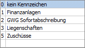
ü 0
Kein Kennzeichen, d.h. ein
normales Anlagegut, bei dem es sich weder um ein geringwertiges Wirtschaftsgut,
noch um eine Finanzanlage handelt.
ü 1
Finanzanlage (z.B.
Wertpapiere - werden nach speziellen Richtlinien bewertet).
Bei diesem
Kennzeichen wird keine AfA gerechnet, auch wenn eine Nutzungsdauer, das
Inbetriebnahmedatum und eine AfA-Art (linear, degressiv oder Staffel-AfA)
eingetragen ist.
ü 2
GWG Sofortabschreibung, d.h.
das geringwertige Anlagegut kann schon im Jahr der Anschaffung mit seinem
gesamten Anschaffungswert abgeschrieben werden.
ü 3
Liegenschaften (z. B.
Grundstücke und Gebäude) - steuert die Behandlung des Anlagegutes in Bezug auf
den Einheitswert.
Liegenschaften werden wie Anlagegüter mit Kennzeichen 0
abgeschrieben. Sobald eine Nutzungsdauer hinterlegt ist, nimmt das Anlagegut
auch an der Abschreibung teil. Wenn keine Abschreibung für eine Liegenschaft
vorgenommen werden soll, muss die AfA "keine AfA" hinterlegt werden bei
eingetragener Nutzungsdauer.
ü 4
Poolabschreibung (gültig nur
für Deutschland)
Über dieses Kennzeichen wird für die GWGs ein Sammelposten
gebildet, der über 5 Jahre mit 20 % abgeschrieben wird. Der Sammelposten bleibt
auch beim Ausscheiden eines GWGs innerhalb der 5 Jahre unberührt.
Anlagen mit
diesem Kennzeichen werden im Prinzip abgeschrieben wie mit Kennzeichen 0. Es
wird eine Nutzungsdauer von 5 Jahren, lineare Abschreibung und Ganzjahres-AfA
vorgeschlagen. Die Besonderheit ist die Behandlung der Abgänge. Diese haben nur
in der handelsrechtlichen Abschreibung eine Auswirkung. Steuerrechtlich dürfen
diese Anlagen erst nach fünf Jahren ausscheiden. Deshalb wird im
Anlagenverzeichnis und im Anlagenspiegel bei Anlagen mit Poolabschreibung ein
Abgang innerhalb der ersten vier Jahre unterdrückt und erst im fünften Jahr
ausgegeben. In den Entwicklungszeilen ändert sich nichts, dort wird der
tatsächliche Abgang ausgewiesen.
ü 5
Zuschüsse für die Darstellung
von Sonderposten oder Zuschüssen
Ein Sonderposten / Zuschuss wird im
Anlagenstamm als Subanlage mit negativem Vorzeichen erfasst. Für die Subanlage
wird ein eigenes FIBU-Konto (z.B. Sonderposten mit Rücklagenanteil) und
AfA-Konto (Ertragskonto) hinterlegt Die FIBU-Buchung der Periodenabschreibung /
Jahresabschreibung erfolgt für diese Anlage mit einem positivem Betrag à FIBU-Konto an AfA-Konto = Sonderposten
mit Rücklagenanteil an Ertragskonto.
Ø AfA
Über die Auswahlbox können Sie die Abschreibungsart wählen:
ü 0 Linear
ü 1 Degressiv
ü 2 Staffel-AfA
ü 3 keine AfA
Auswahlmöglichkeiten für Deutschland
ü 1 Degressiv
Wurde für die Abschreibung bereits die degressive AfA ausgewählt, wird das Flag "Wechsel, degressive -> lineare AfA sofort aktiviert. Das bedeutet, dass die ANBU zum richtigen Zeitpunkt automatisch den Wechsel von degressiver Abschreibungsart auf linear vorschlagen wird.
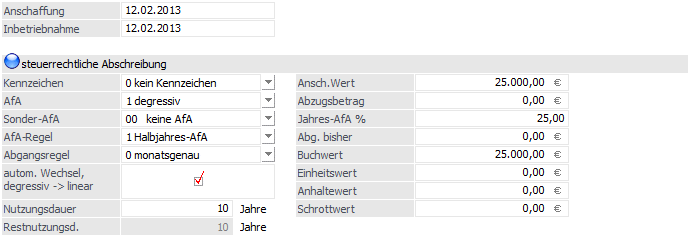
Der Prozentsatz der degressiven AfA wird in dem Feld Jahres-AfA % hinterlegt.
Der Faktor zur Berechnung des Prozentsatzes für die degressive AfA wird automatisch aus der in den Anlagenparametern hinterlegten Obergrenze degressive AfA (%) errechnet. Dadurch wird der sich ständig ändernde maximal erlaubte degressive %-Satz korrekt ermittelt, z.B. bei 30 % degressiver AfA maximal das Dreifache der linearen AfA und ab 2009 bei 25 % degressiver AfA maximal das Zweieinhalbfache der linearen AfA.
Ø Sonder-AfA (gilt nur für Deutschland)
Über die Auswahlbox können Sie eine vorher in den Stammdaten angelegte Sonder-AfA auswählen:
ü 00 keine AfA bzw.
Auswahl der gewünschten Sonder-AfA-Staffel aus dem Menüpunkt
1 Stammdaten
1 Sonder-AfA
Ø AfA-Regel
Durch Anklicken des Pfeils neben dem Eingabefeld werden die hier gültigen Eingabemöglichkeiten aufgelistet. Eine AfA-Regel kann nur editiert werden, wenn das Inbetriebnahmedatum im Wirtschaftsjahr liegt!
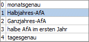
ü 0
Monatsgenau, d.h. die
Abschreibung kann auf Grund des Datums der Inbetriebnahme monatsgenau gerechnet
werden.
ü 1
Halbjahres-AfA, d. h.
aufgrund des Datums der Inbetriebnahme wird geprüft, ob die Anschaffung im
ersten oder zweiten Halbjahr liegt. Wird das Anlagegut im Wirtschaftsjahr mehr
als sechs Monate genutzt, dann wird der gesamte auf ein Jahr entfallende Betrag
abgeschrieben, sonst die Hälfte dieses Betrages.
ü 2
Ganzjahres-Afa, d.h.
unabhängig vom Datum der Inbetriebnahme wird die Abschreibung für ein ganzes
Jahr berechnet.
ü 3
halbe AfA im ersten Jahr,
d.h. abhängig vom hinterlegten Prozentsatz wird im ersten Jahr davon nur die
Hälfte berechnet. (Z.B. Anlage als Staffel-Afa mit 10%, im ersten Jahr werden
aber nur 5% abgeschrieben.)
ü 4
tagesgenau, d.h. die
Abschreibung wird aufgrund des Datums der Inbetriebnahme tagesgenau gerechnet.
Es wird auf die Anzahl der Tage aliquotiert, die das Anlagegut in diesem Jahr im
Betrieb ist.
Ø Abgangsregel
Wählen Sie aus der Combobox die jeweils gültige Abschreibungsregel für das Anlageverzeichnis aus. Eine Abgangsregel kann nur editiert werden, wenn das Inbetriebnahmedatum im Wirtschaftsjahr liegt (bzw. natürlich im Zuge einer Neueingabe einer Anlage)!
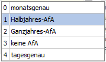
ü 0
Monatsgenau, d.h. bei einem
Abgang oder Teilwert-Abgang wird die anteilige Abgangs-AfA inkl. Abgangsmonat
berechnet.
ü 1
Halbjahres-AfA, d. h. bei
einem Abgang oder Teilwert-Abgang wird je nach Abgangsdatum die halbe oder ganze
Jahres-AfA als Abgangs-AfA abgeschrieben. Liegt der Abgang im ersten Halbjahr,
wird die halbe Jahres-AfA als Abgangs-AfA ausgewiesen und bei einem Abgang im
zweiten Halbjahr die komplette Jahres-AfA.
ü 2
Ganzjahres-Afa, d.h.
unabhängig vom Abgangsdatum wird die komplette Jahres-AfA als Abgangs-AfA
gerechnet
ü 3
keine AfA, d.h. dass keine
Abschreibung mehr im Jahr des Abganges erfolgt.
ü 4
tagesgenau, d.h. bei einem
Abgang oder Teilwert-Abgang wird die anteilige Abgangs-AfA im Abgangsmonat
tagesgenau bis zum Abgangsdatum gerechnet.
Ø Nutzungsdauer
max. 4stellig, numerisch
Eingabe der Grundnutzungsdauer des Anlagegutes in Jahren bzw. Monaten. Bei der WinLine ANBU ist es auch möglich, die Nutzungsdauer in Monaten anzugeben (siehe "Anlagenparameter").
Hinweis
Bei einer Änderung der steuerrechtlichen Nutzungsdauer in einem Hauptanlagegut können optional die Nutzungsdauer und die Theor. Jahres-AfA der Subanlagen angepasst werden. Dabei wird die Anlagenentwicklung der Subanlagen neu durchgerechnet.
Hinweis
Wird eine Anlage oder Subanlage neu angelegt, wird beim Speichern geprüft ob auch das Feld Nutzungsdauer eingegeben wurde. Ist keine Nutzungsdauer eingetragen, wird eine Sicherheitsmeldung ausgegeben.
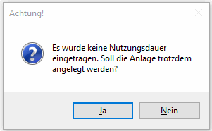
Ø Restnutzungsdauer
Informationsfeld
Zeigt die aktuelle Restnutzungsdauer des Wirtschaftsgutes an. Die Restnutzungsdauer wird aufgrund der Nutzungsdauer und des Inbetriebnahmedatums automatisch errechnet und kann manuell nicht verändert werden.
Ø Zinsen
Eingabe der Zinsen des Wirtschaftsgutes. Das Feld ist ein Anzeigefeld und wird nicht berechnet. Die Zinsen werden entsprechend im Anlagenspiegel angedruckt.
Ø Ansch. Wert
max. 14-stellig mit Komma
Eingabe des Wertes des Anlagegutes zum Zeitpunkt der Anschaffung. Der Anschaffungswert bildet die Basis für die Berechnung der jährlichen Abschreibung.
Anlagen mit negativem Anschaffungswert
Es können auch Anlagen mit negativem Anschaffungswert angelegt werden - so können z.B. Zuschüsse dargestellt werden.
Wird eine solche Anlage gespeichert, erscheint folgende Meldung:
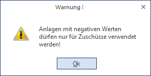
Beispiel für die Behandlung von Anlagen mit negativem Anschaffungswert:
Ein Sonderposten / Zuschuss wird im Anlagenstamm als Subanlage mit negativem Vorzeichen erfasst. Für die Subanlage wird ein eigenes FIBU-Konto (z.B. Sonderposten mit Rücklagenanteil) und AfA-Konto (Ertragskonto) hinterlegt. Als Kennzeichen kann das Kennzeichen 5=Zuschüsse oder auch das Kennzeichen 0=Kein Kennzeichen gewählt werden. Je nach Kennzeichen werden die Buchungen in der FIBU unterschiedlich dargestellt.
Subanlage mit dem Kennzeichen 5 = Zuschüsse
Die FIBU-Buchung der Periodenabschreibung / Jahresabschreibung erfolgt für diese Anlage mit einem positiven Betrag à FIBU-Konto an AfA-Konto = Sonderposten mit Rücklagenanteil an Ertragskonto.
KORE-Buchungen: Die im Anlagenstamm hinterlegte Kostenart ist eine Erlös-Kostenart. Bei der Buchungsübergabe der Periodenabschreibung und Jahresabschreibung an die FIBU wird bei Erlöskostenarten automatisch das Vorzeichen des KORE-Betrages gewechselt. Dadurch können Subventionen und Förderungen, die in der ANBU mit einem negativen Betrag erfasst wurden, in der KORE als Erlös positiv dargestellt werden.
Subanlage mit dem Kennzeichen 0 = Kein Kennzeichen
Die FIBU-Buchung der Periodenabschreibung erfolgt für diese Anlage mit einem negativen Betrag à AfA-Konto an FIBU-Konto = Ertragskonto an Sonderposten mit Rücklagenanteil.
KORE-Buchungen: Die im Anlagenstamm hinterlegte Kostenart ist eine Erlös-Kostenart. Bei der Buchungsübergabe der Periodenabschreibung und Jahresabschreibung an die FIBU wird bei Erlöskostenarten automatisch das Vorzeichen des KORE-Betrages gewechselt. Dadurch können Subventionen und Förderungen, die in der ANBU mit einem negativen Betrag erfasst wurden, in der KORE als Erlös positiv dargestellt werden.
Ø Stille Rücklage (gilt nur für Österreich)
Eingabe der Stillen Rücklage, die auf dieses Anlagegut übertragen wurde (wobei hier nur der Rest der Bewertungsreserve eingegeben wird, der noch vorhanden ist).
Scheiden Wirtschaftsgüter des Anlagevermögens vorzeitig aus, so können die dabei aufgedeckten stillen Reserven (=Differenz zwischen Veräußerungserlös und Buchwert) von den Anschaffungs- oder Herstellungskosten neuer Anlagen abgesetzt werden. Dadurch wird eine Besteuerung der aufgedeckten stillen Reserven vermieden.
Voraussetzungen (Stand 1995)
ü Das Wirtschaftsgut muss mind. 7 Jahre zum Anlagevermögen des Betriebes gehört haben (Ausnahme: Ausscheiden infolge höherer Gewalt oder durch behördlichen Eingriff)
ü Die stille Rücklage kann im Jahr der Aufdeckung oder innerhalb der folgenden drei Wirtschaftsjahre übertragen werden.
ü Als Anschaffungs- oder Herstellungskosten der neuen Anlagen gelten die um die übertragenen stillen Reserven gekürzten Beträge, ebenso wie die Basis für die Berechnung der Abschreibung.
Ø Abzugsbetrag (gilt nur für Deutschland)
Regelung der Investitionsabzugsbeträge gem. § 7g EStG.
Bei Mandanten mit dem Landeskennzeichen "Deutschland" gibt es anstelle der "Stillen Rücklage" das Feld "Abzugsbetrag".
Im Gegensatz zur Stillen Rücklage in Österreich wird der Abzugsbetrag vom Anschaffungswert abgezogen und daraus der Historische Stand Anfang berechnet. Es ist also der gesamte Anschaffungswert einzugeben. In den Auswertungen wird der gesamte Anschaffungswert und der um den Abzugsbetrag verminderte Historische Stand Anfang ausgegeben.
Der um den Abzugsbetrag verminderte AHK ist die Berechnungsgrundlage für die steuerrechtliche und handelsrechtliche Abschreibung und für die Sonderabschreibung.
Soll der Abzugsbetrag handelsrechtlich nicht berücksichtigt werden, muss dafür im ANBU-Parameter die Checkbox "Abzugsbetrag handelsr. ignorieren" aktiviert werden.
Im Anlagenverzeichnis und im Anlagenspiegel kann der Abzugsbetrag aus der Variable 49 (Tabelle T134) angedruckt werden. Die zugehörige Summenvariable ist 0/82.
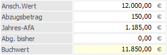
Ø Jahres-AfA
Wird automatisch berechnet - kann für Ausnahmefälle manuell editiert werden (siehe "Anlagenänderung").
z.B. AW = € 2.000,-- ND = 10 Jahre
Anschaffung und Inbetriebnahme: 8.4.2013
Jahres-AfA bei linearer Abschreibung: € 200,--
Liegt das Datum der Inbetriebnahme in der zweiten Jahreshälfte, darf nur die Hälfte der Jahres-AfA abgeschrieben werden (bei linearer und "Halbjahres-AfA"). Dieser Tatsache wird vom Programm bei Durchführung des AfA-Laufes automatisch Rechnung getragen. Im Feld "Jahres AfA" im Anlagenstamm wird immer die gesamte Jahresabschreibung angezeigt.
Wurde die AfA-Art "2 Staffel-AfA" ausgewählt, wird in diesem Feld über die Auswahlbox die zuvor über den Menüpunkt
1 Stammdaten
1 Staffel-AfA
hinterlegte Staffel-AfA ausgewählt.
Achtung
Wird bei einer Anlage die theoretische Jahres-AfA auf 0,00 gestellt, wird beim Speichern der Anlage der Jahres-AfA Betrag automatisch neu berechnet. Soll bei einem Wirtschaftsgut keine Abschreibung erfolgen, verwenden Sie bitte das Kennzeichen "keine AfA" im Feld "AfA".
Ø Jahres-AfA %
Wurde die AfA-Art "1 degressiv" ausgewählt, wird in diesem Feld der Prozentsatz der degressiven AfA hinterlegt. Dabei wird die Obergrenze degressive AfA (%), die in den Anlagenparametern hinterlegt ist, berücksichtigt.
Ø Abgänge bisher
Die Höhe der Abgänge (Teilwertabgang) wird automatisch berechnet. Diese Abgänge braucht man für die Berechnung des Einheitswertes und des Restbuchwertes. Das Feld Abgänge ist ebenfalls editierbar.
Werden alte Anlagenbestände in der ANBU manuell nachgetragen (z.B. weil gerade erst auf dieses System gewechselt wurde) ist hier die Summe der BISHERIGEN Abgänge (Teilwertabgänge vom Anschaffungswert) einzugeben.
Ø Buchwert
Unter dem Buchwert versteht man den um die bisherige AfA reduzierten Anschaffungswert. Der ausgewiesene Stand ist der zu Beginn des Wirtschaftsjahres.
Beispiel
Anschaffung und Inbetriebnahme eines Anlagegutes am 15.2.2012;
AW € 15.000,--; ND 5 Jahre
--> jährliche AfA: € 3.000,--
Buchwert am 01.01.2014: € 9.000,--
Der Buchwert wird bei Eingabe einer Anlage automatisch errechnet, ist jedoch ebenfalls editierbar. Der Buchwert kann immer nur geringer als der Anschaffungswert sein.
Ø Einheitswert (gilt nur für Österreich)
Unter dem Begriff Einheitswert versteht man den durch das zuständige Finanzamt festgelegten steuerlichen Richtwert für Grundstücke und Gebäude.
Der Einheitswert ist die Bemessungsgrundlage für die Ermittlung der Grundsteuer, der Grundsteuermessbetrag sowie die Schenkungs- und Erbschaftssteuer.
Es ist gesetzlich vorgesehen, dass der Einheitswert nicht unter einen bestimmten Prozentsatz des Anschaffungswertes fallen darf. Der Prozentsatz der Einheitswertuntergrenze wird im Menüpunkt
1 WinLine Start
1 Parameter
1 Applikations-Parameter
1 ANBU-Parameter
festgelegt.
Der Einheitswert wird automatisch vorgeschlagen, ist jedoch ebenfalls editierbar.
Hinweis
Für geringwertige Wirtschaftsgüter wird der Einheitswert nur bei österreichischen Mandanten berechnet!
Ø Anhaltewert
Der Anhaltewert legt fest, bis zu welchem Restbuchwert die Anlage abgeschrieben wird. Der theoretische Jahres-AfA-Betrag wird aber dadurch nicht verändert. Ein Anhaltewert von 0,00 ist ohne Bedeutung - es wird dann der Erinnerungswert aus dem Anlagenparameter bei der Abschreibung verwendet.
Bei der Abschreibung wird der Anhaltewert wie der Erinnerungswert berücksichtigt. Die Abschreibung erfolgt vom Anschaffungswert bei der linearen AfA oder vom Restbuchwert bei der degressiven AfA bis der Anhaltewert erreicht ist.
Beispiel
Ein am 1.1. angeschafftes Wirtschaftsgut hat einen AW von 10.000,- und eine Nutzungsdauer von 10 Jahren. Weiters wird ein Anhaltewert von 500,- hinterlegt.
Somit werden jedes Jahr 1000,- abgeschrieben. Im letzten Jahr der Nutzung wird aber nur der Differenzbetrag zwischen Anfangsbuchwert und dem Anhaltewert - also 500,- - abgeschrieben.
Ø Schrottwert
Der Schrottwert beeinflusst die Abschreibungsbasis. Er wird zur Berechnung der theoretischen Jahres-AfA vom Anschaffungswert abgezogen.
Beispiel
Ein am 1.1. angeschafftes Wirtschaftsgut hat einen Anschaffungswert von 100.000,- und eine Nutzungsdauer von 10 Jahren. Es wird ein Schrottwert von 20.000,- hinterlegt.
Die theoretische Jahres-AfA errechnet sich linear aus 10 % von 80.000,- (100.000 - 20.000).
Somit werden jedes Jahr 8000,- abgeschrieben.
Ø Vorz. AFA % (gilt nur für Österreich)
Eingabe des Prozentsatzes. Der Wert errechnet sich dann automatisch auf Grundlage des Anschaffungswertes.
Für Investitionen in Anlagegüter, die im Jahr 2009 oder 2010 angeschafft oder hergestellt werden, kann durch das Konjunkturbelebungsgesetz 2009 eine vorzeitige AfA in Höhe von 30 % vorgenommen werden.
Die vorzeitige AfA wird im Jahr der Anschaffung berechnet, auch wenn die Inbetriebnahme erst in einem Folgejahr erfolgt.
Hinweis
Die vorzeitige AfA beinhaltet auch die normale AfA, d. h. die vorz. AfA wird nicht mehr zur normalen AfA addiert.
Ausgewiesen in den Auswertungen wie z.B. dem Anlagenverzeichnis oder in der Anlagenentwicklung wird nur die normale AfA als Jahresabschreibung. Die Differenz zwischen Vorzeitiger AfA und normaler AfA wird in der Bewertungsreservenliste ausgewiesen.
Hinweis
Nach der Jahresabschreibung wird der Betrag der vorz. AfA auf 0,00 gesetzt. Die Bewertungsreserve der vorz. AfA ist jederzeit über die Anlagenänderung zu sehen und editierbar.
Hinweis
Die Buchungen für die vorzeitige AfA können automatisch erstellt werden. Dazu gibt es in den ANBU-Parametern
1 WinLine Start
1 Parameter
1 Applikations-Parameter
1 ANBU-Parameter
drei neue Felder für die automatische Verbuchung. Erst wenn die Konten in den Parametern eingetragen und die Jahresabschreibungen gefahren sind, werden die Bewertungsbuchungen in den FIBU-Stapel erstellt.
Ø IFB % (gilt nur für Österreich)
Eingabe der aktuellen Prozentsätze für den IFB. Nach Bestätigung der Eingabe wird die Höhe des IFB aufgrund des Anschaffungswertes automatisch errechnet.
Für ein Anlagegut kann nur eine vorz. AfA oder der IFB hinterlegt werden. Die Hinterlegung beider %-Sätze ist nicht möglich.
Bedingungen für die Geltendmachung des IFB:
ü Das Wirtschaftsgut muss eine mindestens vierjährige betriebsgewöhnliche Nutzungsdauer haben und in einer inländischen Betriebsstätte verwendet werden.
ü Der IFB kann nur im Jahre der Anschaffung geltend gemacht werden. Maßgebend ist der Anschaffungs- bzw. Herstellungszeitpunkt (auch bei Teilanschaffungen bzw. Teilherstellungen)
ü Scheiden Wirtschaftsgüter vor Ablauf des vierten Wirtschaftsjahres aus, so ist die Rücklage gewinnerhöhend nachzuversteuern.
Ø Rückl. Ersatzbesch.
Bei Mandanten mit dem Länderkennzeichen D kann hier die Rücklage für Ersatzbeschaffung eingetragen werden.
Eingaben in diesem Feld werden genauso behandelt wie Eingaben in dem Feld "Abzugsbetrag".
Es wird die Rücklage für Ersatzbeschaffung vom Anschaffungswert abgezogen und daraus der Historische Stand Anfang berechnet. Es ist also der gesamte Anschaffungswert einzugeben. In den Auswertungen wird der gesamte Anschaffungswert und der um den Abzugsbetrag / Rücklage für Ersatzbeschaffung verminderte Historische Stand Anfang ausgegeben.
Der um den Abzugsbetrag / Rücklage für Ersatzbeschaffung verminderte AHK ist die Berechnungsgrundlage für die steuerrechtliche Abschreibung.
Soll die Rücklage für Ersatzbeschaffung handelsrechtlich nicht berücksichtigt werden, muss dafür im ANBU-Parameter die Checkbox "Abzugsbetrag handelsr. ignorieren" aktiviert werden.
Im Anlagenverzeichnis und im Anlagenspiegel kann die Rücklage für Ersatzbeschaffung aus der Variable 140 (Tabelle T134) angedruckt werden.
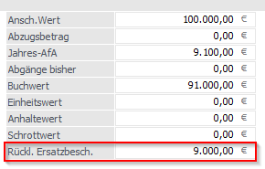
Die für die handelsrechtliche AfA benötigten Einträge (Stamm 2) wie z.B. Anschaffungswert, AfA, Nutzungsdauer, Jahres-AfA oder Buchwert werden mit den Daten der steuerrechtlichen AfA vorbelegt - und können noch manuell angepasst werden.
Hinweis
Im Anlagenstamm werden bei Erfassung eines neuen Anlagenguts die Eingaben und Änderungen im Bereich "steuerrechtliche Abschreibung" immer in den Stamm 2 in den Bereich "handelsrechtliche AfA" übernommen, bis das Anlagengut gespeichert wird.
Buttons
Ø OK
Über den OK-Button werden neue Anlagegüter oder Änderungen von bereits vorhandenen Anlagegütern gespeichert.
Hinweis
In bereits abgeschriebenen Wirtschaftsjahren (Jahresabschreibung wurde durchgeführt) ist der OK-Button nicht aktiv und es können keine Änderungen im Anlagenstamm gespeichert werden. Bei dem Aufruf des Anlagenstamms kommt eine entsprechende Meldung.
Ø Ende
Über den Ende-Button wird der Anlagenstamm ohne Speicherung der Änderungen verlassen.
Wird ein neues Anlagegut erfasst und es wurde bereits in das Register Entwicklung oder Änderung gewechselt, dann wurden die Eingaben automatisch gespeichert und das Anlagegut muss gelöscht werden, wenn die Eingaben verworfen werden sollen.
Ø Löschen
Wenn ein Anlagegut gelöscht wird, so werden nicht automatisch alle ggf. angelegten Subanlagen mit gelöscht, diese müssen separat gelöscht werden. Löschen einer Anlage ist nur im Jahr NACH dem kompletten Abgang einer Anlage möglich - bzw. wenn eine Anlage gerade erst angelegt wurde und noch keine Bewegungsdaten angefallen oder Jahresabschreibungen durchgeführt sind.
Hinweis
Je nachdem, ob und in welchem Jahr die Periodenabschreibung für das zu löschende Anlagegut bereits durchgeführt wurde, wird vor dem Löschen folgende Meldung ausgegeben:
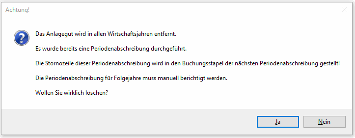
Wird ein Anlagegut, für das schon Periodenabschreibungen durchgeführt wurden, gelöscht, dann wird die Stornozeile der Periodenabschreibung automatisch in den FIBU-Buchungsstapel der nächsten Periodenabschreibung gestellt (Ausnahme Dezember: Da kommt die Stornozeile in den Dezember). Es wird das Buchungsdatum und die Periode des jeweiligen Buchungsstapels herangezogen für die Stornozeile.
Die Periodenabschreibung für Folgejahre muss manuell berichtigt werden.
Ø Anlageninfo
Nach Drücken des Anlageninfo-Buttons werden die wesentlichsten Werte des aktiven Anlagegutes angezeigt.
Ø Navigation
Über die sogenannte VCR-Buttonleiste kann durch Mausklick zwischen den Datensätzen geblättert werden. Damit auf diese Weise auch Daten kontrolliert und geändert werden können, kann mit der Tastenkombination SHIFT + F5 eine Zwischenspeicherung der Daten (Daten werden gespeichert, der Inhalt in den Masken bleibt bestehen, und auch der Focus bleibt im letzten veränderten Feld stehen) durchgeführt werden.
ü  Damit kann der erste Datensatz angesprochen
werden (Tastatur: STRG SHIFT POS1).
Damit kann der erste Datensatz angesprochen
werden (Tastatur: STRG SHIFT POS1).
ü  Damit kann der vorherige Datensatz
angesprochen werden (Tastatur: SHIFT -).
Damit kann der vorherige Datensatz
angesprochen werden (Tastatur: SHIFT -).
ü  Damit kann der nächste Datensatz
angesprochen werden (Tastatur: SHIFT +).
Damit kann der nächste Datensatz
angesprochen werden (Tastatur: SHIFT +).
ü  Damit kann der letzte Datensatz angesprochen
werden (Tastatur: STRG SHIFT ENDE).
Damit kann der letzte Datensatz angesprochen
werden (Tastatur: STRG SHIFT ENDE).
ü  Damit wird die nächste freie Nummer für die
Neuanlage gesucht (Tastatur: +).
Damit wird die nächste freie Nummer für die
Neuanlage gesucht (Tastatur: +).
Hinweis
Wird der Anlagenstamm aufgerufen in einem Wirtschaftsjahr, in dem bereits die Jahresabschreibung durchgeführt wurde, können keine Änderungen am Anlagenstamm vorgenommen werden, der OK-Button ist inaktiv. Bevor sich der Anlagenstamm öffnet, kommt die Meldung
Hinweis
Wird eine Anlage oder Subanlage neu angelegt, wird beim Speichern geprüft ob auch das Feld Nutzungsdauer eingegeben wurde. Ist keine Nutzungsdauer eingetragen, wird eine Sicherheitsmeldung ausgegeben.
Gemeinsame Verwendung der Module WinLine FIBU und WinLine ANBU
Falls Sie Lizenzen für die Finanzbuchhaltung und Anlagenbuchhaltung im Einsatz haben, können Sie direkt bei den Sachkonten eine Kennzeichnung für die Anlagenbuchhaltung hinterlegen.
ü 1 - Anlagekonto
Dadurch öffnet sich beim Buchen in der FIBU automatisch der Anlagenstamm und sämtliche Funktionen zur Anlage von Anlagegütern der WinLine ANBU stehen Ihnen zur Verfügung.
Felder die mit Buchhaltungsdaten bereits vorbelegt werden:
ü Lieferant
ü Nettoanschaffungswert
ü FIBU-Konto
ü Anschaffungsdatum